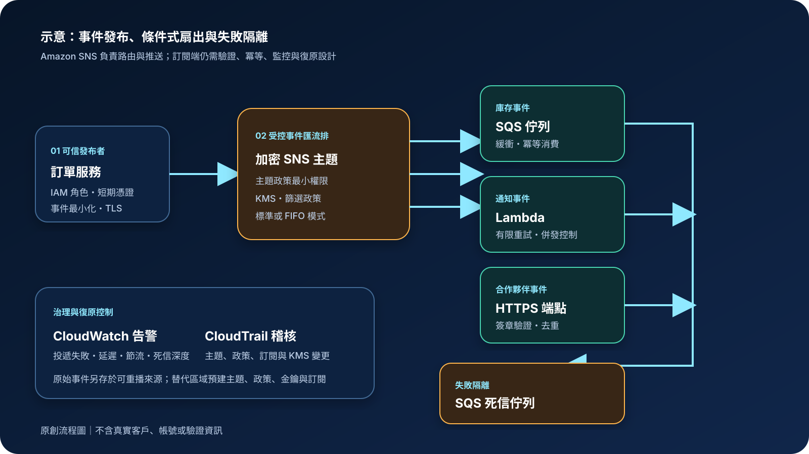

Amazon SNS：事件通知、扇出與安全投遞
Amazon Simple Notification Service（Amazon SNS）是受管發布／訂閱訊息服務。發布者將事件送到主題，SNS 再依訂閱與篩選政策推送給多個端點。它適合即時通知與一對多扇出，但不會替訂閱端保證業務操作只執行一次、永久保存全部事件或自動完成跨區復原。
作者：Dr. William｜查閱與發布：2026-09-22
服務定位
Amazon SNS 位於事件發布者與多個訂閱者之間。發布者只認識主題，不必逐一呼叫每個下游系統；訂閱者可使用 Amazon SQS、AWS Lambda、HTTPS、行動推播、電子郵件或簡訊等端點接收訊息。新增訂閱者通常不必修改發布者，因此適合把同一業務事件分送給庫存、通知、稽核與合作夥伴流程。
SNS 不是持久事件資料庫、一般工作佇列、完整工作流程引擎或串流平台。需要讓工作者自行拉取、吸收積壓與控制處理速率時，通常會以 SQS 承接 SNS 訊息；需要事件規則、軟體即服務整合與事件匯流排時可評估 Amazon EventBridge；需要長期保留及大量重播時，應另設可重播的事件來源。
核心概念與適用邊界
主要元件
- 主題：發布者送出訊息的邏輯入口。主題政策、IAM、KMS 與訂閱設定共同決定誰能發布、誰能管理及哪些端點能接收。
- 訂閱：主題與端點之間的投遞關係；部分端點必須先確認訂閱，未確認前不應視為可用。
- 標準主題：支援廣泛端點、高吞吐與盡力維持順序的至少一次投遞；訂閱者必須處理重複、亂序與暫時失敗。
- FIFO 主題：透過訊息群組與去重機制維持群組內順序，主要搭配 FIFO SQS；吞吐、去重範圍及下游條件仍需驗證。
- 訊息篩選：訂閱可依訊息屬性或訊息本文選擇接收內容，降低不必要投遞與下游處理。
- 投遞政策與死信佇列：重試行為依端點類型而異；無法成功投遞的訊息可轉入 SQS 死信佇列供調查與重驅動。
邊界與依賴
- SNS 主題屬於特定 AWS 區域；主題、KMS 金鑰、訂閱、死信佇列、警報與政策均需納入區域設計。
- Publish 成功代表 SNS 接受訊息，不代表每個訂閱端點已完成業務處理。
- 標準主題可能重複投遞或改變順序；HTTP 回應成功也不等於下游交易一定正確提交。
- 篩選政策變更可能需要時間生效，且錯誤規則可能靜默漏送或大量誤送。
- 伺服器端加密保護主題內的靜態訊息，不涵蓋主題名稱、部分中繼資料、訂閱端保存內容或應用日誌。
- SNS 不會自動把所有主題與未完成投遞狀態複寫到另一區域；跨區恢復需由架構另行處理。
適合與不適合的使用情境
適合
- 訂單、付款、檔案完成或系統事件需要同時通知多個互不相依的下游。
- 希望以 SQS 訂閱建立扇出佇列，讓每個消費系統獨立緩衝、重試與擴縮。
- 不同訂閱者只需要部分事件，可用篩選政策降低無效投遞與運算。
- 需要向受控 HTTPS 端點、Lambda 或使用者通知通道快速推送訊息，且能接受各通道不同的交付特性。
不適合或不能單獨完成
- 每筆工作只能由一個工作者取得、需要明確可見性逾時與積壓控制時，應以 SQS 為主要工作佇列。
- 需要永久事件歷史、任意時間查詢與完整重播，但沒有另外保存原始事件時。
- 要求跨多步驟流程的狀態、逾時、補償與人工核准時，SNS 必須與工作流程服務整合。
- 要求對所有端點提供完全相同的順序、延遲與成功語意，或無法容忍重複投遞時。
示意故事案例：訂單事件的條件式扇出
以下為示意案例，不代表特定組織或正式部署。 一個購物平台在訂單交易完成後，由事件轉送元件使用專用 IAM 角色把最小化的訂單事件發布到加密的標準 SNS 主題。主題政策只允許指定工作負載發布，事件不含付款資料、密碼或長期驗證資訊。不同訂閱使用篩選政策：庫存事件進入 SQS 佇列，通知事件交由 Lambda，合作夥伴事件送往已確認的 HTTPS 端點。
SQS 消費者以業務事件識別值執行冪等處理；Lambda 設定併發與失敗監控；HTTPS 接收端先驗證 SNS 訊息簽章與主題識別，再回覆成功。投遞多次失敗的訊息進入加密死信佇列，CloudWatch 對失敗、節流與死信深度告警，CloudTrail 集中保存管理操作。原始訂單事件另存於可重播來源，替代區域預先建立主題、政策、金鑰與訂閱，以便區域中斷後重新發布尚未完成的事件。

建置與運作流程
- 定義事件契約：指定事件名稱、版本、識別值、必要欄位、資料分類、大小限制與相容策略；敏感內容保留在受控資料來源，訊息只傳遞必要引用。
- 選擇主題類型：需要廣泛端點與高吞吐時採標準主題；需要群組內順序且訂閱模型符合限制時評估 FIFO，並設計足夠訊息群組。
- 建立權限邊界：發布者只可向指定主題發布，平台管理者才可修改政策與訂閱；跨帳號或服務發布加入來源帳號、來源資源及組織條件。
- 設定加密與網路：依治理要求使用 AWS 管理或客戶管理 KMS 金鑰，限制金鑰政策與授權；私有發布者可經 VPC 端點存取 SNS。
- 建立並確認訂閱：逐一驗證端點擁有者、協定、目的地政策與確認狀態；SQS 佇列政策只允許指定主題送入。
- 設計篩選政策：以明確允許規則分流，建立正向、負向、缺少欄位與版本變更測試，監控被篩除和投遞數量的異常變化。
- 控制重試與死信：理解各端點重試行為；對可支援的訂閱配置加密 SQS 死信佇列、保留期、告警與重新驅動程序。
- 保護接收端：HTTP/S 端點驗證簽章、主題與訊息識別，執行冪等處理、限流與快速回應；下游長工作轉入內部佇列。
- 建立觀測：監控發布失敗、成功與失敗投遞、節流、延遲、死信深度、端點錯誤與成本；稽核主題、政策、訂閱及 KMS 變更。
- 設計復原：保存可重播事件與完成狀態，使用基礎設施即程式碼建立替代區域資源，定期演練切換、重新發布、去重與回切。
成本、可用性與維運考量
SNS 成本依發布、投遞、資料傳輸與使用的端點類型計算；HTTP/S、電子郵件、行動推播、簡訊、SQS、Lambda 與 Firehose 的計價方式並不相同。訊息大小會影響請求計量，篩選可減少部分下游投遞與處理成本。KMS、CloudWatch、CloudTrail、VPC 端點、SQS 死信佇列、Lambda、跨區資料傳輸及原始事件保存也會增加整體費用。
SNS 由服務管理區域內基礎設施，但端對端可用性仍取決於發布者、主題政策、KMS、訂閱確認、端點容量、目的地權限及下游服務。使用 SQS 訂閱可把即時推送與下游處理解耦；直接 HTTPS 或 Lambda 訂閱則需特別處理節流、逾時、重試放大與端點故障。
多區域設計不能只複製主題名稱。替代區域必須具備相容的主題、金鑰、政策、訂閱、目的地與警報，並能從可信來源辨識尚未完成的事件。切換過程可能同時產生重複投遞，因此訂閱端的冪等性和完成狀態是復原必要條件。
Amazon SNS 特有資安風險與控制
- 主題政策過度公開：禁止匿名或廣泛 Principal，限定發布、訂閱與管理動作的帳號、角色、組織、來源服務及資源。
- 跨服務混淆代理：服務對服務發布時使用適用的來源帳號與來源 ARN 條件，避免其他資源借用既有授權。
- 未授權或錯誤訂閱：盤點待確認與已確認訂閱，限制 Subscribe、SetSubscriptionAttributes 與 Unsubscribe，對新增端點和協定變更告警。
- 偽造 HTTP/S 通知：接收端使用官方規則驗證 SNS 訊息簽章、憑證來源、TopicArn 與訊息類型，不僅依來源 IP 或自訂標頭判斷。
- 標準主題重複或亂序：訂閱者以事件識別值、條件寫入和完成狀態實作冪等性，測試逾時、回應遺失、重試與延遲投遞。
- 篩選政策漏送：篩選規則納入版本控制、審查與測試；監控投遞量、被篩除數與各訂閱比例，重要事件保留獨立稽核來源。
- 敏感訊息外洩：訊息與屬性只放必要資料，避免把個人資料或機密放入主題名稱、屬性與日誌；靜態資料使用 KMS，加密不取代內容最小化。
- KMS 權限造成發布或投遞中斷：精確授權發布服務與主題使用金鑰，分離管理與使用權；監控政策變更、停用及刪除排程。
- 長期身分資訊外洩：人員使用聯合登入、MFA 與短期憑證，工作負載使用 IAM 角色；下游連線資訊放入 Secrets Manager 或 Parameter Store。
- 直接端點遭重試洪水：接收端快速驗證與入列、限制資源、設計退避及熔斷；能使用 SQS 緩衝時避免把長工作放在同步 HTTP 處理。
- 死信訊息無人處理：死信佇列使用加密、最小權限、保留期與告警；建立分類、修正、重播、證據保存和責任人程序。
- 區域故障後無法重建：以基礎設施即程式碼保存主題與訂閱設定，保留可重播來源，預建替代區域金鑰、政策和目的地並演練。
共同責任邊界
AWS 負責 SNS 受管服務及底層雲端基礎設施的安全、維護與區域內服務運作。客戶負責事件內容與分類、主題類型、IAM 與主題政策、KMS 設定、訂閱端點、篩選政策、訊息簽章驗證、冪等性、重試與死信處理、監控、成本控制，以及跨區復原架構。
客戶仍須落實 IAM 最小權限、人員 MFA 與短期憑證、帳號與網路隔離、公開存取盤點、KMS 加密、Secrets Manager／Parameter Store 管理下游設定、CloudTrail／CloudWatch 觀測，以及原始事件、完成狀態與基礎設施的備份和跨區復原。AWS 不會替客戶判斷事件是否合法、確認合作夥伴端點的業務交易成功，或保證所有端點只處理一次。
上線前可執行檢查清單
- □ 已依端點、吞吐、順序、去重與訊息群組需求選擇標準或 FIFO 主題。
- □ 事件契約含版本與唯一識別值，沒有不必要敏感資料，發布大小與相容策略已測試。
- □ 發布、訂閱管理、政策管理與金鑰管理角色分離，權限限定至必要主題和動作。
- □ 人員使用聯合登入、MFA 與短期憑證；工作負載使用 IAM 角色。
- □ 主題政策沒有匿名或廣泛外部存取，跨帳號與服務發布包含適用的來源限制。
- □ 所有訂閱端點已確認擁有者、協定、目的地政策與目前確認狀態。
- □ SQS 佇列政策只允許指定主題送入；HTTPS 端點驗證簽章、TopicArn 與訊息類型。
- □ 篩選政策有版本控制和正負向測試，缺少欄位與事件版本變更不會造成靜默漏送。
- □ KMS 加密已啟用且發布服務、SNS、管理者與復原區域的權限均已測試。
- □ 訂閱者具備冪等性，已測試重複、亂序、節流、逾時、回應遺失與部分成功。
- □ 各端點的重試行為、容量與逾時已確認，死信佇列、保留期、告警和重驅動程序已建立。
- □ CloudWatch 監控發布、成功與失敗投遞、節流、延遲、被篩除數及死信深度。
- □ CloudTrail 集中保存管理事件，主題、政策、訂閱與 KMS 高風險變更會觸發告警。
- □ 下游連線資訊由 Secrets Manager 或 Parameter Store 管理，未寫入事件、程式碼與公開設定。
- □ 原始事件與完成狀態可重播，替代區域的主題、金鑰、政策、訂閱與目的地已建立並演練。
- □ 已估算發布、端點投遞、訊息大小、資料傳輸、KMS、CloudWatch、CloudTrail、VPC 端點與死信成本。
AWS 官方一手來源
- Amazon SNS Developer Guide｜What is Amazon SNS?（查閱：2026-09-22）
- Amazon SNS subscription filter policies（查閱：2026-09-22）
- Amazon SNS FIFO topics（查閱：2026-09-22）
- Amazon SNS message delivery retries（查閱：2026-09-22）
- Amazon SNS dead-letter queues（查閱：2026-09-22）
- Verifying the signatures of Amazon SNS messages（查閱：2026-09-22）
- Security best practices for Amazon SNS（查閱：2026-09-22）
- Amazon SNS data protection and encryption（查閱：2026-09-22）
- Logging Amazon SNS API calls using AWS CloudTrail（查閱：2026-09-22）
- Amazon SNS pricing（查閱：2026-09-22）
- AWS Well-Architected Security Pillar｜Shared responsibility（查閱：2026-09-22）
內容說明
本文依查閱日可用的 AWS 官方文件整理，作為基礎學習與架構討論材料；實際部署仍須依最新功能、區域支援、價格、配額、組織政策、資料分類、法規及復原演練結果調整。